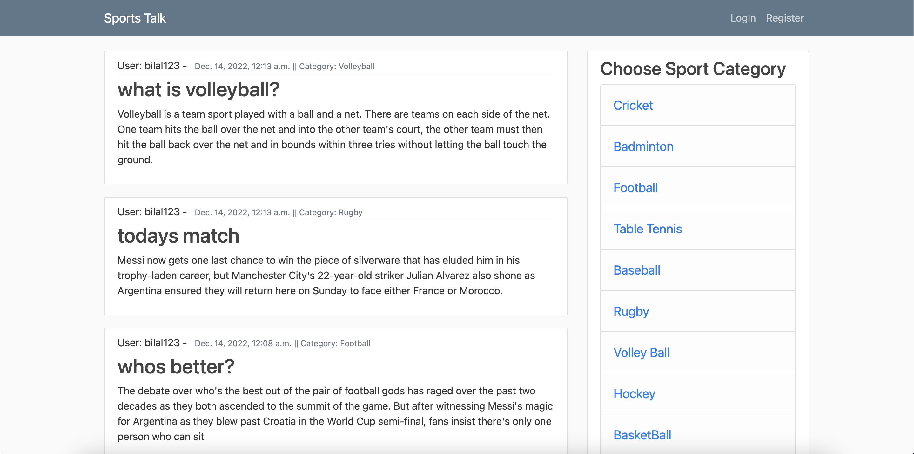
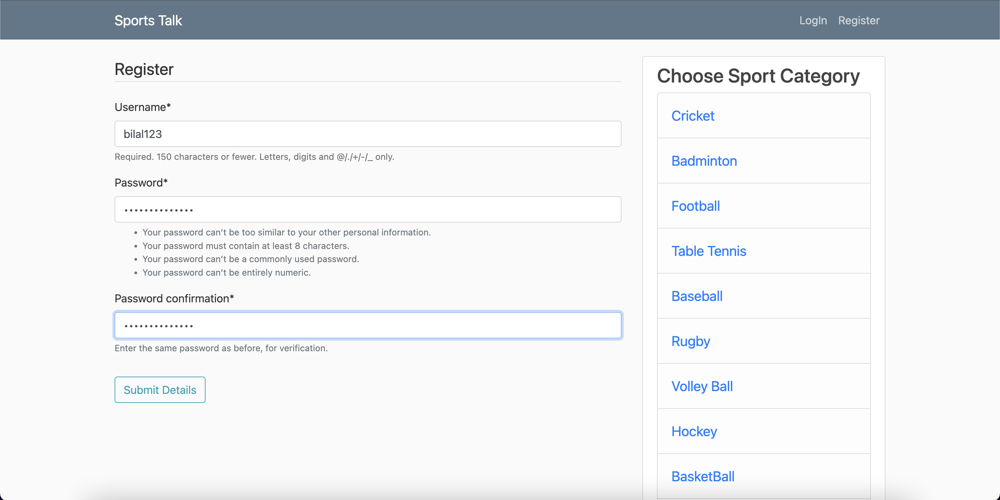
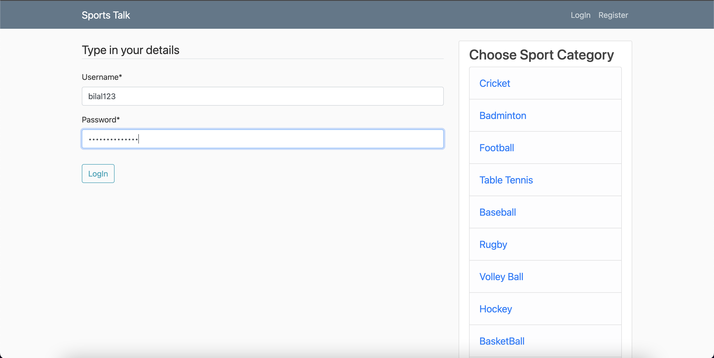
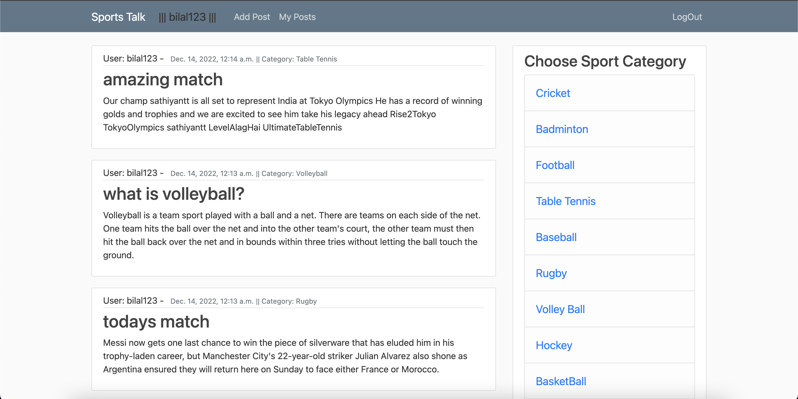
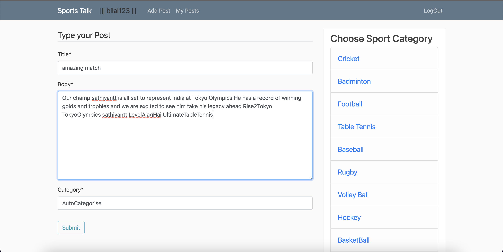
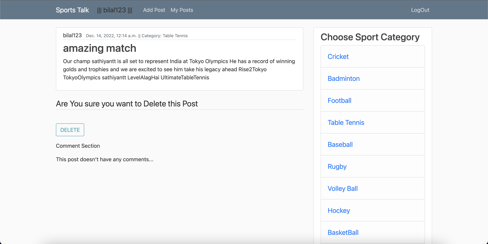

Sports Forum - Automated Post Categorisation
This was the first project that I built that used a Machine Learning Model to categorise posts on the website
I first created a dataset through collecting tweets from Twitter using tweepy in Python about different sports.
After storing tweets in a csv file, I carried out data preprocessing, this involed removing usernames, hashtags, emojis, stopwords, punctuations, and lower-casing words from each tweet.
Using this cleaned data, I trained the Naive bayes Machine Learning Model on 75% of data, and tested it using the remaining 25%.
Finally I built the web Forum using Django, and implemented the Machine Learning Model to categorise the posts.
Technologies:
- - Python
- - Django
- - Scikit learn
- - HTML
- - CSS
- - Javascript
- - Twitter API
- - NLTK
Landing Page

Registeration Page

Login Page

Logged In Page

Add Post Page

Delete Post Page
